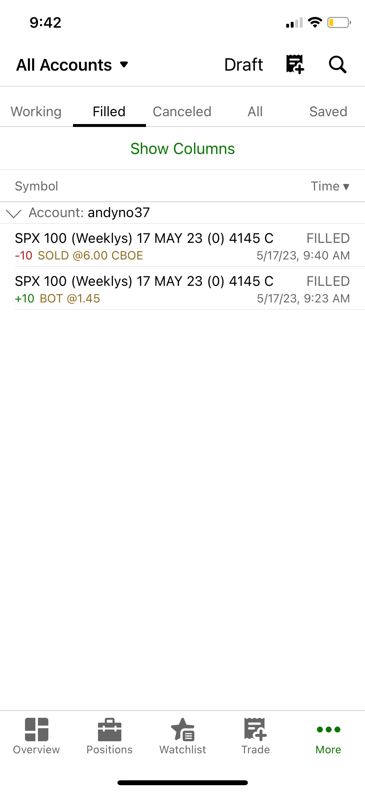
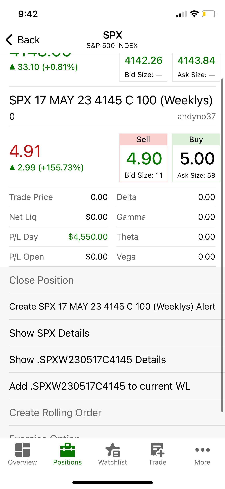
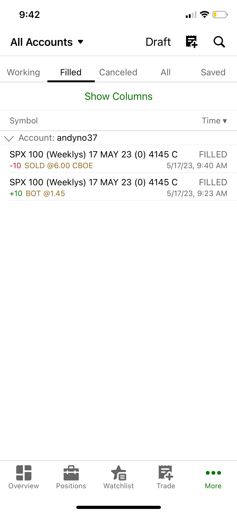
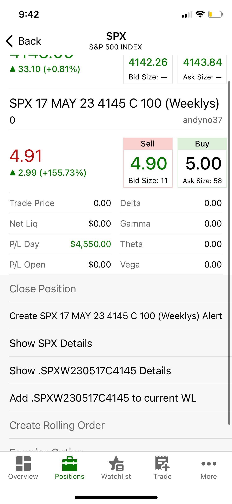

SPX 0DTE trading by ANDY NO
5/29/2023
In this article, I am going to summarize how I trade SPX 0DTE contracts. My primary strategy is to trade the breakout via order flow. However, there are other technical/discretionary factors that I take into account before I enter my position.
Main Strategy
I use RSI, Money Flow Index, and MACD as my indicators. The simplest strategy is if the market respects the VWAP for the day; RSI and MFI are trending upwards; and the MACD EMA is negative but about to reverse. When all three of these factors align, it is an excellent time for an entry. Furthermore, it's essential to check the passive buyer/seller through the book map and monitor the volume.
Importance of Exit Point
In my opinion, the exit point is more critical than the entry point when trading 0DTE SPX contracts. I flatten my positions when both the RSI and MFI cross the overbought line, typically in the depending on the timeframe I am trading. In cases where the market is trending upwards, I let the runners run but ensure to consider the probability of the contract going ITM and review my positions every pull back to account the theta to take profits accordingly.
Breakout Example
As shown in the images below, this is an example of a perfect "breakout day" I traded MAY 10th 2023.
Which Market Cycle Fits This Strategy
I find that during the ranging market cycle, when the macro trend (daily chart; +1 year timeframe) of SPY is about to breakout upwards, this SPX 0DTE strategy works well. As shown in the images below, these are some of the trades I took this month (MAY 2023).
 



Always Remember: RISK MANAGEMENT
Red days are inevitable; being a "profitable trader" does not mean winning every trade. It is knowing your risk requiste by knowing your trade statistics. When the profit exceed losses consistently by managing your risk, one can be a "profitable trader". Always remeber that risk management is the key.

Conclusion and Caution
Trading SPX 0DTE can be highly lucrative, but I would be hesitant to recommend it to everyone. It requires more than just a dedication, as there's a psychological aspect involved when real money is at stake, and strong discipline is crucial. Despite this cautionary note, if you are willing to risk it for the biscuit, my advice would be don't buy any courses. If they are truly a profitable trader, they wouldn't be salesmen. All the information you need to learn is out there for free on the internet. Also, trade with real money, within your risk requiste, instead of paper trading. You can take hundreads of simulated trading but you will learn more with one live trade using your capital. Remember that the stock market is the most expensive school for anyone.